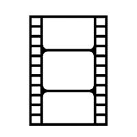
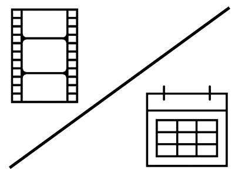
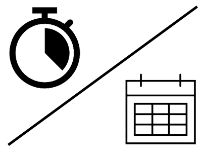
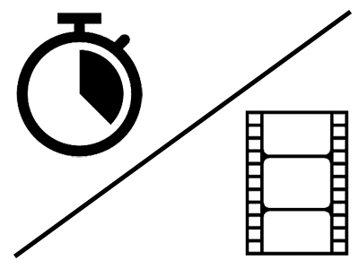
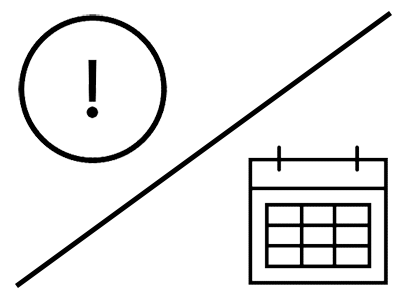
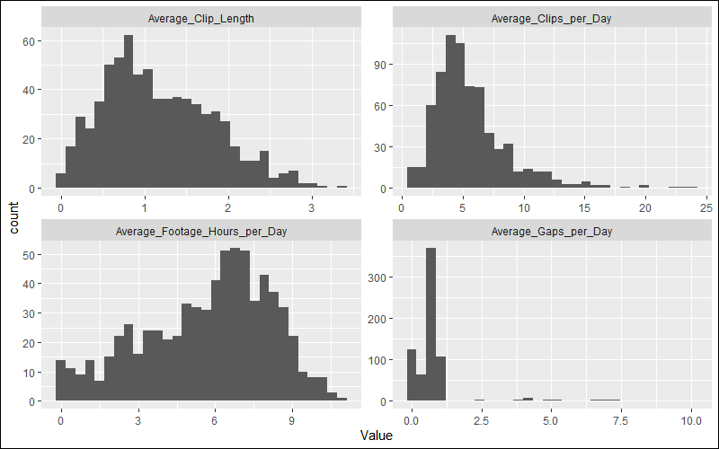

Incarcerated youth are an exceptionally vulnerable population, and body-worn cameras are an important tool of accountability both for those incarcerated and the staff who supervise them. In 2018 the Texas Juvenile Justice Department (TJJD) deployed body-worn cameras for the first time, and this is a case study of how the agency developed a methodology for measuring the success of the camera rollout. This is also a case study of analysis failure, as it became clear that real-world implementation problems were corrupting the data and rendering the methodology unusable. However, the process of working through the causes of this failure helped the agency identify previously unrecognized problems and ultimately proved to be of great benefit. The purpose of this case study is to demonstrate how negative findings can still be incredibly useful in real-world settings.
Body-worn cameras became a standard tool of policing in the US in the mid-2010s. By recording officer interactions with the public, law enforcement agencies could achieve a greater degree of accountability. Not only could credible claims of police abuse against civilians be easily verified, the argument went, but false accusations would decline as well, saving law enforcement agencies time and resources that would otherwise be wasted on spurious allegations. Initial studies seemed to support this argument.
TJJD faced similar issues to law enforcement agencies, and body-worn cameras seemed like they could be a useful tool. Secure youth residential facilities in Texas all had overhead cameras, but these were very old (they still ran on tape) and captured no audio. This presented a number of problems when it came to deciphering contested incidents, not to mention that these cameras had clearly not prevented any of the agency’s prior scandals from taking place. TJJD received special funding from the legislature to roll out body-worn cameras system-wide, and all juvenile correctional officers were required to wear one.
Background
From the outset of the rollout of body-worn cameras, TJJD faced a major issue with implementation: in 2019, body worn cameras were an established tool for law enforcement, but there was very little literature or best practice to draw from for their use in a correctional environment. Unlike police officers, juvenile correctional officers (JCOs) deal directly with their charges for virtually their entire shift. In an eight-hour shift, a police officer might record a few calls and traffic stops. A juvenile correctional officer, on the other hand, would record for almost eight consecutive hours. And, because TJJD recorded round-the-clock for hundreds of employees at a time, this added up very quickly to a lot of footage.
For example, a typical dorm in a correctional center might have four JCOs assigned to it. Across a single week, these four JCOs would be expected to record at least 160 hours of footage.
Figure 1: Four JCOs x 40 hours per week = 160 hours of footage.
This was replicated across every dorm. Three dorms, for example, would produce nearly 500 hours of footage, as seen below.
Figure 2: Three dorms x four JCOs x 40 hours per week = 480 hours of footage.
Finally, we had more than one facility. Four facilities with three dorms each would produce nearly 2,000 hours of footage every week.
Figure 3: Four facilities x three dorms x four JCOs x 40 hours per week = 1,960 hours of footage.
In actuality, we had a total of five facilities each with over a dozen dorms producing an anticipated 17,000 hours of footage every week – an impossible amount to monitor manually.
As a result, footage review had to be done in a limited, reactive manner. If our monitoring team received an incident report, they could easily zero in on the cameras of the officers involved and review the incident accordingly. But our executive team had hoped to be able to use the footage proactively, looking for “red flags” in order to prevent potential abuses instead of only responding to allegations.
Because the agency had no way of automating the monitoring of footage, any proactive analysis had to be metadata-based. But what to look for in the metadata? Once again, the lack of best-practice literature left us in the lurch. So, we brainstormed ideas for “red flags” and came up with the following that could be screened for using camera metadata:
Minimal quantity of footage – our camera policy required correctional officers to have their cameras on at all times in the presence of youth. No footage meant they weren’t using their cameras.
Frequently turning the camera on and off – a correctional officer working a dorm should have their cameras always on when around youth and not be turning them on and off repeatedly.
Large gaps between clips – it defeats the purpose of having cameras if they’re not turned on.
In addition, we came up with a fourth red flag, which could be screened for by comparing camera metadata with shift-tracking metadata:
- Mismatch between clips recorded and shifts worked – the agency had very recently rolled out a new shift tracking software. We should expect to see the hours logged by the body cameras roughly match the shift hours worked.
Analysis, part 1: Quality control and footage analysis
For this analysis, I gathered the most recent three weeks of body-worn camera data – which, at the time, covered April 1–21, 2019. I also pulled data from Shifthound (our shift management software) covering the same time period. Finally, I gathered HR data from CAPPS, the system that most of the State of Texas used at the time for personnel management and finance.1 I then performed some quality control work, summarized in the dropdown box below.
SkimR is a helpful R package for exploratory analysis that gives summary statistics for every variable in a data frame, including missing values. After using the skim function on clip data, shift data, and HR data, I noticed that the clip data had some missing values for employee ID. This was an error which pointed to data entry mistakes – body-worn cameras do not record footage on their own, after all, so employee IDs should be assigned to each clip.
From here I compared the employee ID field in the clip data to the employee ID field in the HR data. Somewhat surprisingly, IDs existed in the clip data that did not correspond to any entries in the HR data, indicating yet more data entry mistakes – the HR data is the ground truth for all employee IDs. I checked the shift data for the same error – employee IDs that did not exist in the HR data – and found the same problem.
As well as employee IDs that did not exist in the HR data, I also looked for employee IDs in the footage and shift data which related to staff who were not actually employed between April 1–21, 2019. I found some examples of this, which indicated yet more errors: staff cannot use a body-worn camera or log a shift if they have yet to begin working or if they have been terminated (system permissions are revoked upon leaving employment).
I made a list of every erroneous ID to pass off to HR and monitoring staff before excluding them from the subsequent analysis. In total, 10.6% of clips representing 11.3% of total footage had to be excluded due to these initial data quality issues, foreshadowing the subsequent data quality issues the analysis would uncover.
The full analysis script can be found on GitHub.
In order to operationalize the “red flags” from our brainstorming session, I needed to see what exactly the cameras captured in their metadata. The variables most relevant to our purposes were:
- Clip start
- Clip end
- Camera used
- Who was assigned to the camera at the time
- The role of the person assigned to the camera
Using these fields, I first created the following aggregations per employee ID:

I used these aggregations to devise the following staff metrics:




Once I established these metrics for each employee I looked at their respective distributions. Standard staff shift lengths at the time were eight hours. If staff were using their cameras appropriately, we would expect to see distributions centered around clip lengths of about an hour, eight or fewer clips per day, and 8-12 footage hours per day. We would also expect to see 0 large gaps.
Show the code
```{r}
library(tidyverse)
Footage_Metrics_by_Employee <- read_csv("Output/Footage Metrics by Employee.csv")
Footage_Metrics_by_Employee %>%
select(-Clips, -Days_With_Footage, -Footage_Hours, -Gaps) %>%
pivot_longer(-Employee_ID, names_to = "Metric", values_to = "Value") %>%
ggplot(aes(x = Value)) +
geom_histogram() +
facet_wrap(~Metric, scales = "free")
```
By eyeballing the distributions I could tell most staff were recording fewer than 10 clips per day, shooting about 0.5–2 hours for each clip, for a total of 2–10 hours of daily footage, with the majority of employees having less than one significant gap per day. Superficially, this appeared to provide evidence of widespread attempts at complying with the body-worn camera policy and no systemic rejection or resistance. If this were indeed the case, then we could turn our attention to individual outliers.
First, though, we thought we would attempt to validate this initial impression by testing another assumption. If each employee works on average 40 hours per week – a substantial underestimate given how common overtime was – we should expect, over a three-week period, to see about 120 hours of footage per employee in the dataset. This is not what we found.
Average footage per employee was 70.2 hours over the three-week period, meaning that the average employee was recording less than 60% of shift hours worked. With so many hours going unrecorded for unknown reasons, we needed to investigate further.
Surely the shift data would clarify this…
Analysis, part 2: Footage and shift comparison
With the data on shifts worked from our timekeeping system, I could theoretically compare actual shifts worked to the amount of footage recorded. If there were patterns in where the gaps in footage fell, that comparison might help to explain why.
In order to join the shift data to the camera data, I needed a common unit of analysis beyond “Employee ID.” Using only this value would produce a nonsensical table that joined up every clip of footage to every shift worked.
For example, let’s take employee #9001005 at Facility Epsilon between April 1–3. This employee has the following clips recorded during that time period:
| Employee_ID | Clip_ID | Clip_Start | Clip_End |
|---|---|---|---|
| 9001005 | 156421 | 2019-04-01 05:54:34 | 2019-04-01 08:34:34 |
| 9001005 | 155093 | 2019-04-01 08:40:59 | 2019-04-01 08:54:51 |
| 9001005 | 151419 | 2019-04-01 09:03:16 | 2019-04-01 11:00:30 |
| 9001005 | 153133 | 2019-04-01 11:10:09 | 2019-04-01 12:39:51 |
| 9001005 | 151088 | 2019-04-01 12:57:51 | 2019-04-01 14:06:44 |
| 9001005 | 150947 | 2019-04-02 05:56:34 | 2019-04-02 09:48:50 |
| 9001005 | 151699 | 2019-04-02 09:54:23 | 2019-04-02 12:17:15 |
We can join this to a similar table of shifts logged. This particular employee had the following shifts scheduled from April 1–3:
| Employee_ID | Shift_ID | Shift_Start | Shift_End |
|---|---|---|---|
| 9001005 | E050603 | 2019-04-01 06:00:00 | 2019-04-01 14:00:00 |
| 9001005 | E051303 | 2019-04-02 06:00:00 | 2019-04-02 14:00:00 |
The table shows two eight-hour morning shifts from 6:00 am to 2:00 pm. We can join the two tables together by ID on a messy many-to-many join, but that tells us nothing about how much they overlap (or fail to overlap) without extensive additional work. For example, we have a unique identifier for employee clip (Clip_ID) and employee shift (Shift_ID), but what we need is a unique identifier that can be used to join the two. Fortunately, for this particular data we can create a unique identifier since both clips and shifts are fundamentally measures of time. While Employee_ID is not in itself unique (i.e., one employee can have multiple clips attached to that ID), Employee_ID combined with time of day is unique. A person can only be in one place at a time, after all!
To reshape the data for joining, I created a function that takes any data frame with a start and end column and unfolds it into discrete units of time. Using the code below to create the “Interval_Convert” function, the shift data above for employee 9001005 converts into one entry per hour of the day per shift. As a result, two eight-hour shifts get turned into 16 employee hours (a sample of which is shown below).
Show the code
```{r}
library(sqldf)
library(lubridate)
Interval_Convert <- function(DF, Start_Col, End_Col, Int_Unit, Int_Length = 1) {
browser()
Start_Col2 <- enquo(Start_Col)
End_Col2 <- enquo(End_Col)
Start_End <- DF %>%
ungroup() %>%
summarize(Min_Start = min(!!Start_Col2),
Max_End = max(!!End_Col2)) %>%
mutate(Start = floor_date(Min_Start, Int_Unit),
End = ceiling_date(Max_End, Int_Unit))
DF <- DF %>%
mutate(Single = !!Start_Col2 == !!End_Col2)
Interval_Table <- data.frame(Interval_Start = seq.POSIXt(Start_End$Start[1], Start_End$End[1], by = str_c(Int_Length, " ", Int_Unit))) %>%
mutate(Interval_End = lead(Interval_Start)) %>%
filter(!is.na(Interval_End))
by <- join_by(Interval_Start <= !!End_Col2, Interval_End >= !!Start_Col2)
Interval_Data_Table <- Interval_Table %>%
left_join(DF, by) %>%
mutate(Seconds_Duration_Within_Interval = if_else(!!End_Col2 > Interval_End, Interval_End, !!End_Col2) -
if_else(!!Start_Col2 < Interval_Start, Interval_Start, !!Start_Col2)) %>%
filter(!(Single & Interval_End == !!Start_Col2),
as.numeric(Seconds_Duration_Within_Interval) > 0)
return(Interval_Data_Table)
}
```| Interval_Start | Interval_End | Employee_ID | Shift_ID | Shift_Start | Shift_End | Seconds_Duration_Within_Interval |
|---|---|---|---|---|---|---|
| 2019-04-01 06:00:00 | 2019-04-01 07:00:00 | 9001005 | E050603 | 2019-04-01 06:00:00 | 2019-04-01 14:00:00 | 3600 secs |
| 2019-04-01 07:00:00 | 2019-04-01 08:00:00 | 9001005 | E050603 | 2019-04-01 06:00:00 | 2019-04-01 14:00:00 | 3600 secs |
| 2019-04-01 08:00:00 | 2019-04-01 09:00:00 | 9001005 | E050603 | 2019-04-01 06:00:00 | 2019-04-01 14:00:00 | 3600 secs |
| 2019-04-01 09:00:00 | 2019-04-01 10:00:00 | 9001005 | E050603 | 2019-04-01 06:00:00 | 2019-04-01 14:00:00 | 3600 secs |
| … | … | … | … | … | … | … |
The footage could be converted in a similar manner, and in this way I could break down both the shift data and the clip data into an hour-by-hour view and compare them to one another. Using this new format, I joined together the full tables of footage and shifts to determine how much footage was recorded with no corresponding shift in the timekeeping system.
| HR_Location | Footage_Hours_No_Shift | Employee_IDs_With_Missing_Shift |
|---|---|---|
| Alpha | 1805 | 122 |
| Beta | 3749 | 114 |
| Delta | 1208 | 133 |
| Epsilon | 2899 | 157 |
| Gamma | 4153 | 170 |
To summarize what the table is telling us: Almost every employee has footage hours that do not match with logged shifts, totaling nearly 14,000 hours when you add up the Footage_Hours_No_Shift column. But what about the opposite case? How many shift hours were logged with no corresponding footage?
| HR_Location | Shift_Hours_No_Footage | Employee_IDs_With_Missing_Footage |
|---|---|---|
| Alpha | 7338 | 127 |
| Beta | 6014 | 118 |
| Delta | 12830 | 141 |
| Epsilon | 9000 | 168 |
| Gamma | 11960 | 183 |
Oh dear. Again, almost every employee has logged shift hours with no footage: 47,000 hours in total. To put it another way, that’s an entire work week per employee not showing up in camera footage.
At this point, we could probably rule out deliberate noncompliance. The clip data already implied that most employees were following the policy, and our facility leadership would surely have noticed a mass refusal large enough to show up this clearly in the data.
One way to check for deliberate noncompliance would be to first exclude shifts that contain zero footage whatsoever. This would rule out total mismatches, where – for whatever reason – the logged shifts had totally failed to overlap with recorded clips. For the remaining shifts that do contain footage, we could look at the proportion of the shift covered by footage. So, if an eight-hour shift had four hours of recorded footage associated with it, then we could say that 50% of the shift had been recorded. The following histogram is a distribution of the number of employees organized by the percent of their shift-hours they recorded (but only shifts that had a nonzero amount of footage).

As it turned out, most employees recorded the majority of their matching shifts, a finding that roughly aligns with the initial clip analysis. So, what explains the 14,000 hours of footage with no shifts, and the 47,000 hours of shifts with no footage?
Causes of failure
Here, I believed, we had reached the end of what I could do with data alone, and so I presented these findings (or lack thereof) to executive leadership. The failure to gather reliable data from linking the clip data to the shift data prompted follow-ups into what exactly was going wrong. As it turned out, many things were going wrong.
First, a number of technical problems plagued the early rollout of the cameras:
All of our facilities suffered from high turnover, and camera ownership was not consistently updated. Employees who no longer worked at the agency could therefore appear in the clip data – somebody else had taken over their camera but had not put their name and ID on it.
We had no way of telling if a camera was not recording due to being docked and recharging or not recording due to being switched off.
In the early days of the rollout, footage got assigned to an employee based on the owner of the dock, not the camera. In other words, if Employee A had recorded their shift with their camera but uploaded the footage using a dock assigned to Employee B then the footage would show up in the system as belonging to Employee B.
The shift data was, unsurprisingly, even worse, and it was here we came across our most important finding. While the evidence showed that there wasn’t any widespread non-compliance with the use of the cameras, there was widespread non-compliance with the use of our shift management software. Details are included in the dropdown box below.
Our HR system, CAPPS, had a feature that tracked hours worked in order to calculate leave and overtime pay. However, CAPPS was a statewide application designed for 9–5 office workers, and could not capture the irregular working hours of our staff (much less aid in planning future shifts). We had obtained separate shift management software to fill these gaps, but not realized how inconsistently it was being used. All facilities were required to have their employees log their shifts, but some followed through on this better than others. And even for those that did make a good-faith effort at follow-through, quality control was nonexistent.
In CAPPS, time entry determined pay, so strong incentives existed to ensure accurate entry. But for our shift management software, no incentives existed at all for making sure that entries were correct. For example, a correctional officer could have a 40-hour work week scheduled in the shift software but miss the entire week due to an injury, and the software would still show them as having worked 40 hours that week. Nobody bothered to go back and correct these types of errors because there was no reason to.
The software was intended to be used proactively for planning purposes, not after-the-fact for logging and tracking purposes. Thus, it produced data that was totally inconsistent with actual hours worked, which became apparent when compared to data (like body-worn camera footage) that tracked actual hours on the floor.
In the end, we had to rethink a number of aspects of the shift software’s implementation. In the process of these fixes, leadership also came to make explicit that the software’s primary purpose was to help facilities schedule future shifts, not audit hours worked after the fact (which CAPPS already did, just on a day-by-day basis as opposed to an hour-by-hour basis). This analysis was the only time we attempted to use the shift data in this manner.
What we learned from failure
Whatever means we used to monitor compliance with the camera policy, we learned that it couldn’t be fully automated. The agency followed up this analysis with a random sampling approach, in which monitors would randomly select times of day they knew a given staff member would have to have their cameras turned on and actually watch the associated clips. This review process confirmed the first impressions from the statistical review above: most employees were making good faith attempts at complying with the policy despite technical glitches, short-staffing, and administrative confusion. It also confirmed that proactive monitoring of correctional officers was a human process which had to come from supervisors and staff.
The one piece of the analysis we did use going forward was the clip analysis (converted into a Power BI dashboard and included in the GitHub repository for this article), but only as a supplement for already-launched investigations, not a prompt for one. Body-worn camera footage remained immensely useful for investigations after-the-fact, but inconsistencies in clip data were not, in and of themselves, particularly noteworthy “red flags.” At the end of the day, analytics can contextualize and enhance human judgment, but it cannot replace it.
In academia, the bias in favor of positive findings is well-documented. The failure to find something, or a lack of statistical significance, does not lend itself to publication in the same way that a novel discovery does. But, in an applied setting, where results matter more than publication criteria, negative findings can be highly insightful. They can falsify erroneous assumptions, bring unknown problems to light, and prompt the creation of new processes and tools. In this context, a failure is only truly a failure if nothing is learned from it.
- About the author
- Noah Wright is a data scientist with the Texas Juvenile Justice Department. He is interested in the applications of data science to public policy in the context of real-world constraints, and the ethics thereof (ethics being highly relevant in his line of work). He can be reached on LinkedIn.
- Copyright and licence
- © 2023 Noah Wright

 This article is licensed under a Creative Commons Attribution 4.0 (CC BY 4.0) International licence.
This article is licensed under a Creative Commons Attribution 4.0 (CC BY 4.0) International licence.
- How to cite
- Wright, Noah. 2023. “Learning from failure: ‘Red flags’ in body-worn camera data.” Real World Data Science, November 16, 2023. URL